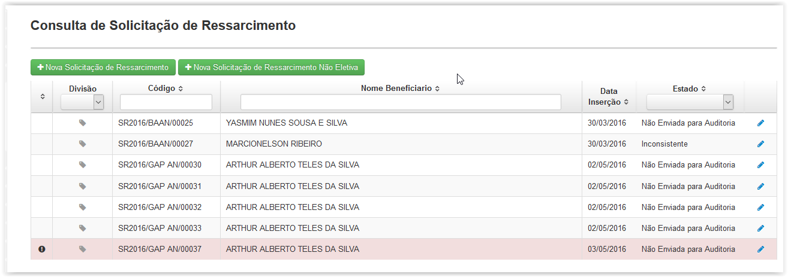

Clicando em 'Solic. Ressarcimento' surgirá a tela 'Consulta de Solicitação de Ressarcimento' onde será apresentada uma lista das solicitações cadastradas.
É possível facilitar a busca utilizando os filtros Código e Nome Beneficiário, bastando apenas clicar e digitar a palavra a ser buscada, ou selecionando a opção Estado.
O filtro Estado oferece as seguintes opções:
Não Enviada para Auditoria: Solicitações em que os campos obrigatórios foram preenchidos e salvos;
Enviada para Auditoria: Solicitações em que todos campos obrigatórios foram preenchidos e enviados para auditoria; e
Inconsistente: Solicitações que foram enviadas para a Auditoria Prospectiva mas foram retornadas por alguma inconsistência.
O ícone ( ) e a linha com o fundo em vermelho indicam que a solicitação é Não Eletiva.
) e a linha com o fundo em vermelho indicam que a solicitação é Não Eletiva.

Tela 'Consulta de Solicitação de Ressarcimento'
O botão ( ) permite a edição das solicitações nos estados Não Enviada para Auditoria e Inconsistente ou visualizar os detalhes de uma solicitação Enviada para Auditoria.
) permite a edição das solicitações nos estados Não Enviada para Auditoria e Inconsistente ou visualizar os detalhes de uma solicitação Enviada para Auditoria.
Ao clicar no botão ( ) será exibida a tela 'Formulário de Solicitação de Ressarcimento' onde é possível cadastrar uma nova solicitação de ressarcimento e enviar para a auditoria.
) será exibida a tela 'Formulário de Solicitação de Ressarcimento' onde é possível cadastrar uma nova solicitação de ressarcimento e enviar para a auditoria.
Ao clicar no botão () será exibida a tela 'Formulário de Solicitação de Ressarcimento Não Eletiva' onde é possível cadastrar uma nova solicitação de ressarcimento não eletiva e enviar para a auditoria.